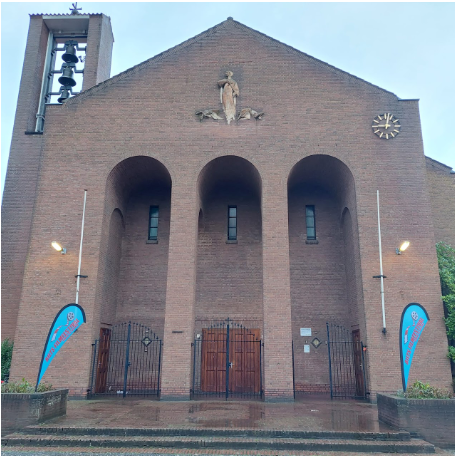

Het Bilts Filmfestival heeft als doel het vertonen van films die
aanzetten tot nadenken en innerlijke reflectie. Het festival
richt zich op het presenteren van kwalitatief hoogstaande films
die inzicht geven in menselijke emoties en ervaringen. Daarnaast
streeft het festival ernaar een ontmoetingsplaats te zijn voor
de gemeenschap van De Bilt en omstreken, waarbij bezoekers na de
vertoningen kunnen napraten en hun indrukken delen.
(bron:Vierklank)

Op vrijdag 7 februari en zaterdag 8 februari 2025!
Locatie: Kerklaan 31 in De Bilt
BFF - Selectie Films 2025
Letters to god (vrijdag 7 februari om 10:00)
Een film waarin de 8-jarige Tyler Doherty worstelt met zijn
ziekte en zijn omgeving. Hij schrijft daarom brieven over
hoop, geloof en angst. Een even mooi als aangrijpend verhaal
voor alle leeftijden",
One Life (vrijdag 7 februari om 14:00)
De film vertelt het waargebeurde verhaal van Sir Nicholas
Winton, die tijdens de Tweede Wereldoorlog honderden Joodse
kinderen uit Tsjechoslowakije redde van de Holocaust. Het
drama volgt zijn moedige inspanningen, morele dilemma's en
de blijvende impact van zijn acties, die pas vele jaren
later volledig erkend werden.
The Quiet Girl (vrijdag 7 februari om 19:30)
We volgen Cait, een verwaarloosd Iers meisje dat tijdens de
zomer bij pleegfamilieleden verblijft. In hun liefdevolle
zorg bloeit ze op, maar lang verborgen familiegeheimen
dreigen alles te veranderen. Het verhaal verkent thema's van
stilte, trauma en de kracht van menselijke relaties in een
complexe wereld.
Shoplifters (zaterdag 8 februari om 19:30)
Een arm Japans gezin leeft van diefstal en kleine
criminaliteit. Wanneer ze een verwaarloosd meisje opnemen,
groeit hun band, maar geheimen komen aan het licht. Dit
confronteert hen met de ware aard van hun relaties en de
prijs van hun keuzes, met emotionele en juridische gevolgen.